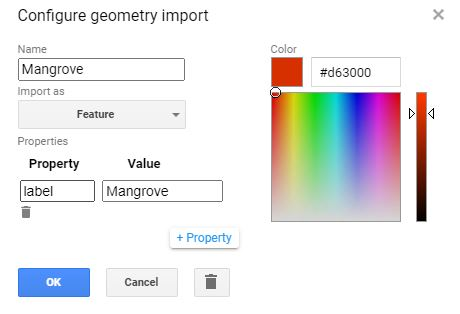
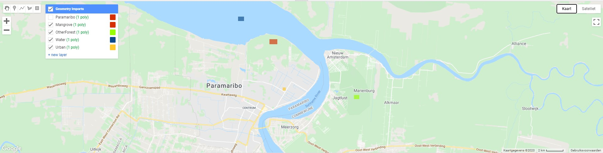
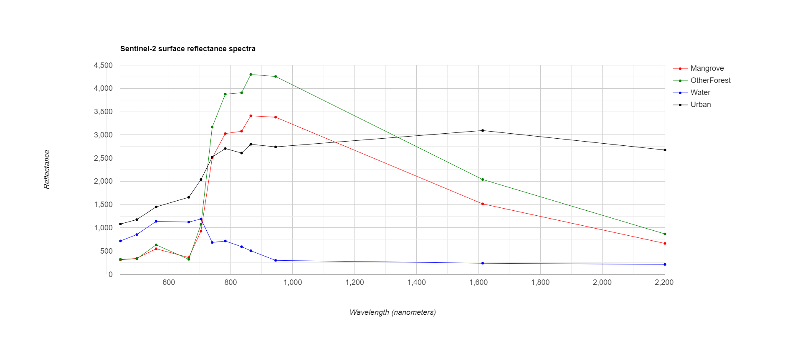

Spectrale responsiecurves
Als laatste onderdeel van dit practicum, kijken we even naar de spectrale signaturen van onze klassen. Uit deze curves kunnen we volgende zaken afleiden (zie ook Practicum 1):
-
Welke banden/indices zorgen voor onderscheid tussen klassen?
-
Welk spectrale curves heeft elk van onze klassen? Kunnen we deze curves ook verklaren?
Aanmaken voorbeeldFeatures
Om spectrale curves te maken, hebben we eveneens voorbeeld-samples nodig van elk van de klassen. Dit kan door opnieuw nieuwe features in te tekenen (bv één punt voor 1 klasse). We doen dit bijvoorbeeld voor de klassen Mangrove, OtherForest, Water en Urban. Zoek één representatief punt voor elk van de klassen. Maak deze aan als het type Feature en geef het een property 'label', met een bijpassende naam


Eenmaal de VoorbeeldFeatures zijn aangemaakt kun je ze samenvoegen in het script:
var vbPol = ee.FeatureCollection([Mangrove,OtherForest,Water,Urban]);
S2-beeld aanmaken
Maak ook opnieuw het Sentinel-2 beeld uit vorige oefening aan, met de indices:
// --------------------------------------------------------------------
// STAP 1 - Inladen en klaarzetten van S2-beeld. Mét extra cloud-masking
// -------------------------------------------------------------------
//Cloudprobability functie:
// Functie die nieuwe CloudProbability collectie samenvoegt met S2 (sen2cloudless)
// meer info: https://medium.com/sentinel-hub/cloud-masks-at-your-service-6e5b2cb2ce8a
var getS2_SR_CLOUD_PROBABILITY = function () {
var innerJoined = ee.Join.inner().apply({
primary: ee.ImageCollection("COPERNICUS/S2_SR"),
secondary: ee.ImageCollection("COPERNICUS/S2_CLOUD_PROBABILITY"),
condition: ee.Filter.equals({
leftField: 'system:index',
rightField: 'system:index'
})
});
var mergeImageBands = function (joinResult) {
return ee.Image(joinResult.get('primary'))
.addBands(joinResult.get('secondary'));
};
var newCollection = innerJoined.map(mergeImageBands);
return ee.ImageCollection(newCollection);
};
// Mask out clouds
var maskClouds = function(image) {
var cloudProbabilityThreshold = 40;
var cloudMask = image.select('probability').lt(cloudProbabilityThreshold);
return image.updateMask(cloudMask);
};
//Aanmaken van een ImageCollection ter hoogte van Mangroves Paramaribo, Suriname
var S2_coll = getS2_SR_CLOUD_PROBABILITY()
.filterDate('2019-08-01','2019-10-30')// Filteren voor het jaar 2020, droge tijd
.filterMetadata('CLOUDY_PIXEL_PERCENTAGE','less_than',50) //Voorselectie obv wolken
.map(maskClouds) //toepassen van de cloudmaskfunctie
.filterBounds(ROI); //collectie filteren obv de Kustzonegeometrie
// -----------------------------------------------------------------------------
// TOEVOEGEN INDICES
// -----------------------------------------------------------------------------
var addIndices = function (image) {
var mvi = image.expression('(B8-B3)/(B11-B3)', {
'B8' : image.select('B8'),
'B3': image.select('B3'),
'B11' : image.select('B11')
}).float().rename('MVI');
var ndvi = image.normalizedDifference(['B8', 'B4']).rename('NDVI');
var ndwi = image.normalizedDifference(['B3', 'B12']).rename('NDWI');
return image.addBands(mvi).addBands(ndvi).addBands(ndwi);
};
//Toepassen indices + medianreducer + clippen
var S2_im = S2_coll.map(addIndices).median().clip(Paramaribo);
Cloud mask methode
In voorgaande code wordt opnieuw gebruik gemaakt van de extra S2-cloudmask methode. Je kunt evengoed gebruik maken van de andere strategiën, zoals gezien in "Cloud Masking" van Practicum 4.
Spectrale responsiecurve aanmaken
Vervolgens kunnen we de Chart aanmaken. Tevens linken we de overeenkomstige golflengtes aan de banden, om zo een spectrum te krijgen met de golflengte in de X-as.
// Banden S2 aangeven (hier: volledig, inclusief B1 en B9 (worden weggelaten in classificatie wegens onbruikbaar)
var bands =['B1','B2','B3','B4','B5','B6','B7','B8','B8A','B9','B11','B12']
//De overeenkomstige golflengte per band aangeven (zie bandenverdeling Sentinel-2).
var wavelengths =[443.9,496.6,559,664.5,703.9,740.2,782.5,835.1,864.8,945,1613.7,2202.4]
//Aanmaken Chart
var Chart = ui.Chart.image.regions({
image: S2_im.select(bands),
regions: vbPol,
reducer: ee.Reducer.mean(),
scale: 10,
seriesProperty: 'label',
xLabels: wavelengths
})
var plotOptions = {
title: 'Sentinel-2 surface reflectance spectra',
hAxis: {title: 'Wavelength (nanometers)'},
vAxis: {title: 'Reflectance'},
lineWidth: 1,
pointSize: 4,
series: {
0: {color: 'red'}, // Mangrove
1: {color: 'green'}, // Forest
2: {color: 'blue'}, // water
3: {color: 'black'}, //crops/grass
}};
print(Chart.setOptions(plotOptions));
